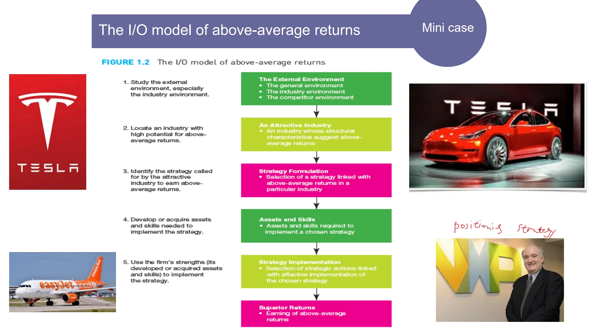

The framework
| Step | I/O: outside in | Resource-based: inside out |
|---|---|---|
| 1. Starting point | Study the external environment, especially the industry. | Identify resources and assess strengths and weaknesses relative to competitors. |
| 2. Assessment | Locate an industry with attractive structural characteristics. | Determine capabilities: what integrated activities can the firm perform well? |
| 3. Advantage | Choose the strategy required by that industry. | Assess whether resources and capabilities can support competitive advantage. |
| 4. Fit | Develop or acquire the assets and skills needed. | Find industry opportunities that those capabilities can exploit. |
| 5. Action | Implement the selected strategy. | Formulate and implement a strategy that connects capabilities to opportunities. |
Key distinctions
Resource, capability and advantage are different
A resource is an input available to the firm. A capability is the capacity to combine resources to perform an activity. Competitive advantage is a relative outcome: the firm is able to outperform rivals. Owning resources does not establish that the organization can deploy them effectively.
Connecting the two views
Industry attractiveness and company strength should be assessed separately before combining them. A favorable industry is not automatically accessible; an impressive internal capability is not automatically valuable to a customer. The strategic task is to show the link.
How to use it
- Specify the relevant industry and compare its structure with alternatives.
- Describe resources separately from the activities they make possible.
- Test whether the resulting capabilities matter to customers and withstand competitive responses.
Keep in mind
Neither lens alone explains every performance difference. Use the VRINO and activity-system pages to examine internal advantage more closely.
How can an attractive market still be a poor choice?
Reveal the explanation
The firm may lack the capabilities, access or resources required to compete successfully there.
Read the classroom original
Complete pages from the supplied lecture slides. Select a page to read, enlarge or browse its extracted text. Page numbers refer to the PDF’s physical page order.
